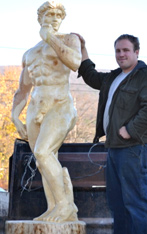
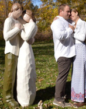
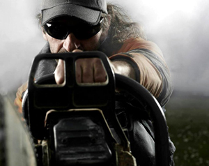
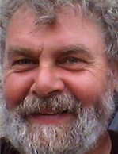
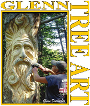
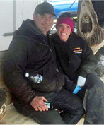
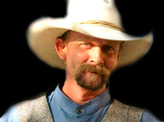
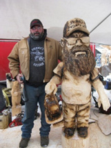
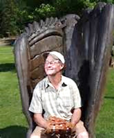

2016 Seminar Archives
16th Annual Ridgway Chainsaw Carver's Rendezvous
"Incorporating Complexity in Your Carving" with Richard Hamilton, Altoona, PA
Richard has roots of entrepreneurship that stem back generations. Though not continuing in the family business, he has taken his talent that he was gifted with from a very young age and turned it into a business to support his family. Richard began drawing and painting before he could write a paragraph. His family has fond memories of him taking to his bedroom walls to unleash his creativity. After pursuing Football and Biology, he embraced his God-given talent and pursued Art after College. Not only does he carve small sculptures to put food on the table, he puts much focus on carving large unique sculptures including multi-animal totems and human figures. He specializes in sculpture design and creation which allows him to do many custom commissioned carvings.
Visit Richard's Site: http://www.getchainsawart.com/
Call: 814-215-6223
Download Presentation Materials (PDF)
"Partnering to Make Your Carving Business Work" with Brittany Hamilton, Altoona, PA
Brittany grew up in a small town. During her High School career she yearned to learn much about Entrepreneurship through the program, Future Business Leaders of America. After traveling and gaining much experience abroad she returned to the USA and settled in Altoona, Pa where she met her husband. He was the perfect match, his talent and her business skills were combined to continue running his full-time carving business. For the past 5 years she has done everything from website building and maintaining, social media, invoicing, customer service, sales, chip clean up, videography, photography, painting, and a little bit of sawing. She hopes to grow the business and venture into new mediums and outlets in the coming years!
Follow Brittany at: https://www.facebook.com/RLHWoodSculptures
Download Presentation Materials (PDF)
"Chainsaw 201" with Tim Klock, Altoona, PA
Tim began carving in 2003 after nearly destroying his ankle in a timber framing accident. During the long recovery he started carving with a chainsaw to keep from going crazy. Four months after carving his first bear, he was invited to demonstrate his art at Blair County's Keystone Country fair. Three years later, he was competing in the Echo Cup Championship in Oshkosh, Wisconsin. He has also competed in the U.K. at the English open and carved in Carrbridge, Scotland since 2011. Tim is looking forward to another trip across the pond this year. When he's not traveling and competing he can be found at his studio in Altoona, PA doing commission work and occasionally giving lessons to help other artists achieve their dreams and goals. He has been attending the Chainsaw Carvers Rendezvous in Ridgeway since 2004. Tim accredits half of his knowledge on carving to the ‘Vous and the carvers that attend the event.
Follow Tim at: https://www.facebook.com/timothy.klock.9
Download Presentation Materials (PDF)
"Blockhausen!" with Andreas Martin, Germany
Andreas is known as the "sow sawer" or carver of the boar. This has earned him the nick name of SauenSaeger or wild-boar carver. While he was the leader for the Freiberg Twp. municipal forest in N Central Germany, he discovered carving with a chainsaw as a personal hobby. Today, with Steffie, they manage an active and vibrant attraction located in a beautiful mountainous environment, which features interactive forest experiences in a public/private forest. This is a large property that is a destination place for all to come and see chainsaw carved sculptures. A great passion of Andreas Martin has been to work with very large hardwood logs and carve life-sized objects. This passion led Andreas to starting and hosting the world renowned Husky Cup competition. This is where the world’s best chainsaw carving teams come and complete. Andreas and Steffie are featured on the 2016 Ridgway Chainsaw Carving Rendezvous T-Shirt as an honor and recognition to their contribution to the art of chainsaw sculpture.
Visit Andreas's Website: http://www.blockhausen.de/
"Angelina" with Glenn Durlacher, Queensbury, NY
Glenn is a Long Island native and has been sculpting professionally for more than 30 years. His career began with creating ice sculptures while working as a banquet chef for Marriott hotels. Over the years, he has sculpted centerpieces for many prestigious events, including Hilary Clinton’s senatorial campaign and the First Night New Year celebrations in Albany and Saratoga Springs. In 1985, he was featured on national television with PM Magazine and with Christine Jansing of CNBC. In 2009, he moved to Glens Falls, New York, and opened Glenn Tree Art, a studio and outdoor sculpture garden, now located at 1048 State Route 9, in Queensbury, New York. Glenn specializes in custom stump carving, wildlife and pet sculptures and beam carving.
Visit Glenn's Website: http://glenntreeart.com/
Email Glenn at: gdurlacher7@yahoo.com
Call Glenn at: 518-522-6025
Download Presentation Materials (PDF)
"Chainsaw Carving Tools and Technology- Update" and "Production Carving & the Quick Carve" with Dawna and Tom Ceriani from Boot Jack Mtn, PA
Dawna and Tom are one of the few husband and wife chainsaw carving teams in our country. Tom had been intrigued with the art for years. He recalls stopping to watch carvers at fairs with his family each summer. Then in 2000, Tom attended the Ridgway Rendezvous and started to deepen his interest in this trade. He invested into more tools and took advantage of any free moment given to put a saw in some wood. After a few months of Dawna watching Tom develop his skill, she craved to learn this unique art form too. Tom had such a passion for chainsaw carving and Dawna wanted to share that excitement alongside of her husband. She began to learn how to handle a saw and test her artistic skills in the wood. After a lot of determination and hours behind their saws, they realized they wanted to create a business with their combined talents. They have been growing in the industry ever since with their business T & D Carvings. They enjoy developing their talent together while raising a family in a small Pennsylvania town just outside Ridgway, PA.
Visit their website: http://www.tanddcarvings.net/
Call Dawna and Tom: 814-265-1645 or 814-590-1671
Download Presentation Materials (PDF)
"Wood Carving and Carving the Human Face" with Jeff Phares, Illinois
began carving as a hobby in 1984. He showed such a natural talent in this area that he began carving full time by 1991, and quickly became known throughout he wood carving community as one of the Nation's best in his field. Jeff has reflected his skill to such a level that he now works in many different mediums, and has developed the techniques in his art that are unique and unprecedented in his finished work. Jeff is currently promoting his work in bronze, however wood carving is still his major passion.
Jeff teaches classes and gives seminars in numerous locations across the Country during each year. It is apparent that Jeff wishes to suggest in his finished work the demeanor of the subject, and his intention to use the grain and natural irregularities for effect. Jeff motivates his students to learn this technique, and search deep for their own creativity, as he does with all his projects.
Jeff has entered various competitions and has won many ribbons and awards. In addition, his work is featured in several galleries throughout the Country. Private collectors covet his work as they are drawn to his inspirational art. The attractions lies within his ability to offer realism and natural character to all of his pieces.
Follow Jeff at: https://www.facebook.com/Jeff-Phares-484300351639124/
Call Jeff: (217) 341-9639
Download Presentation Materials (PDF)
"Starve or Carve" with Steve Backus, Widbey Island, WA
Starve or Carve!
"Fostering Public Art Programs in Local Communities" with Pat McVay, Widbey Island, WA
Pat's history in the arts goes back 30 years to Paris, where he began his career by repairing furniture. Lively, zealous discussions at local cafes made for lots of broken furniture! Pat was given a small shop, a few tools and lots of paint used to hide mistakes. There was a blue period, a red period and a white period and soon, people began asking him to create new furniture. Then came work in porcelain tile, and after moving to the Olympic Peninsula, his attraction to the natural forms of the forest led him into wood carving. Currently, most of his work is large-scale carvings from already-downed trees, using everything from a chain saw to fine chisels. His whimsical and even comical sense is often the basis of unique carvings of people and animals. Many of his works are visible in public spaces up and down the West Coast. Currently he has over 200 carvings on the Seattle Waterfront on Pier 57 near the “great wheel”. He was a founding member of the Northwest Stone Sculptors Association and the Cascade Wood Sculptors Guild. He shows his work at "Music for the Eyes," a gallery in Langley, Washington and at Island Art in Clinton just up the hill from the ferry on Whidbey Island and his home.
Visit Pat's Website: www.mcvaysculpture.com
Call Pat: 360-579-7811
Download Presentation Materials (PDF)